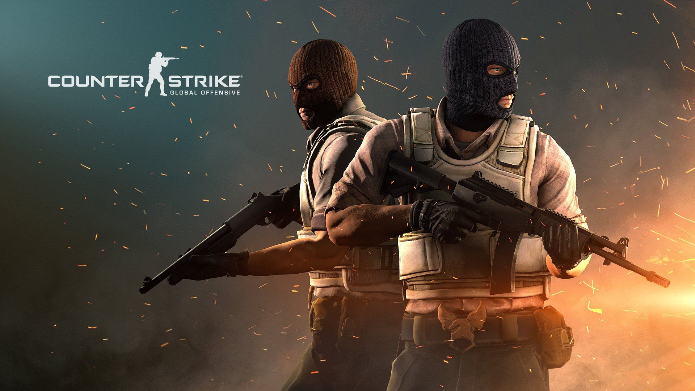
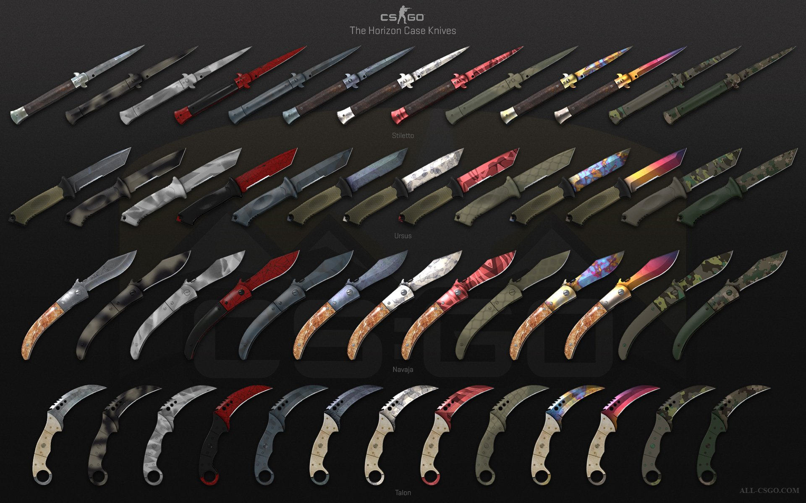

Здесь карты только для закладки бомбы
Так проголосовали игроки в 2015-м году на сайте Valve.
Counter-Strike: Global Offensive (CS:GO; с англ. — «Контрудар: глобальное наступление») — многопользовательская компьютерная игра, разработанная компаниями Valve и Hidden Path Entertainment. Последняя игра в серии игр Counter-Strike[5]. Выпуск игры для персональных компьютеров на операционных системах Windows и macOS, также игровых приставках Xbox 360 и PlayStation 3 состоялся 21 августа 2012 года. Версия игры для Linux была выпущена в 2014 году[2], а в 2016 году игра, в рамках программы обратной совместимости, стала доступна на Xbox One[6]. В 2018 году была выпущена бесплатная версия с возможностью игры с реальными игроками и с ботами. Позже, в декабре того же года игра стала полностью бесплатной[⇨].
Как и в остальных играх серии, в Counter-Strike: Global Offensive игроки делятся на две команды: террористов и подразделений специального назначения, после чего сражаются друг с другом в серии раундов, по результатам которых определяется команда-победитель. Игроку доступны разные режимы игры, меняющие условия поединка между командами, а также игра с ботами
Все скины ножей относятся к крайне редким предметам и получить их можно только из оружейного ящика. Как все остальные скины оружия, скины ноже не влияют на их характеристики, так дальность атаки не изменяется от видимой длинны лезвия скина. Здесь рассмотрены основные типы скинов оружия, без вариантов раскраски.
В CS:GO путаница с моделями Штык-нож и Штык-нож M9
Нож-бабочка имеет уникальную анимацию переключения и осмотра ножа.
Модель ножа в игре не пропорциональна, лезвие сильно длиннее рукоятки. Из-за это в сложенном виде лезвие будет торчать из рукоятки, хотя предполагается, что оно будет полностью в ней скрыто.
Складной нож впервые появился в Альфа-версии CS:GO, как нож у Террористов.

Нож Фальшион уникален тем, что имеет две варианта анимации осмотра ножа. В одном варианте, нож вращается вокруг своей оси на ладони игрока, во втором варианте игрок балансирует ножом стоящим у него на ладони.
Один из самых дорогих скинов ножей.
то время как в игре используется обычная хват ножа, в реальности нож используется в обратном хвате или как называют в англоязычных странах в «пистолетном-хвате».
Как и предыдущие игры серии, Counter-Strike: Global Offensive является трёхмерным многопользовательским шутером от первого лица, в котором игроки распределяются по двум командам и сражаются друг с другом. В игре представлены две команды: террористы и спецназ, а также два сценария игры: разминирование бомбы и спасение заложника. В первом сценарии игроки, играющие за команду террористов, должны заминировать бомбу в одном из нескольких точек закладки, а спецназ — успешно её разминировать. Во втором сценарии игрокам из команды террористов необходимо не дать противоборствующей команде спасти заложников, которых они охраняют
Опять же так проголосовали игроки в 2015-м году на сайте Valve.
Игрой Counter-Strike: Global Offensive владеет (купили или получили в подарок) почти 14 миллионов пользователей. Из них только 13,4 миллиона запустили эту игру хотя бы один раз. В день в нее играет примерно от полумиллиона до 680 тысяч человек, а за 2 недели общее количество сыгравших составило примерно 6,4 миллиона.
новости (обнова раз в 5дней)
лайфхаки
лучшие моменты